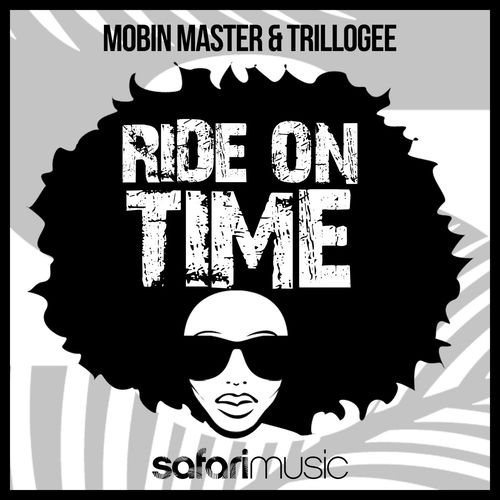

Alfreda Gerald
Alfreda Gerald is an American vocalist born in Morganton, North Carolina.
Complete Discography & Tracklists (23)
2004 Soulstice 🎵 10 Tracks
2016 Divapellas 1 🎵 4 Tracks
2022 Let The Music (Lift you up) 🎵 4 Tracks
2022 Get Away with It 🎵 4 Tracks
2023 Love sensation (70s disco version) 🎵 1 Tracks
2023 Love Sensation 🎵 3 Tracks
2023 Rhythm Is A Dancer 🎵 2 Tracks
2023 Turn It Up 🎵 2 Tracks
2024 I'm In Love 🎵 3 Tracks
2024 I'm The Queen 🎵 2 Tracks
2024 Can't Stop Thinking 🎵 0 Tracks
No tracks registered.